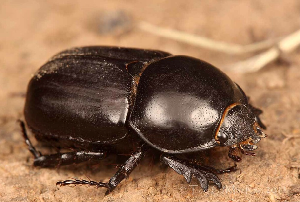
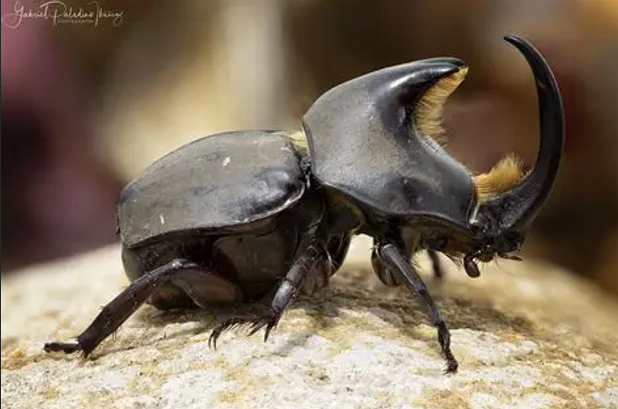

Escarabajo torito hembra

Escarabajo torito macho
iloboderus abderus es un escarabajo de cuerpo robusto, coloración marrón oscura a negra y marcado dimorfismo sexual. Los machos presentan un cuerno prominente en la cabeza, mientras que las hembras carecen de él. Sus larvas, conocidas como gusanos blancos, habitan en el suelo y se alimentan de raíces y materia orgánica, pudiendo ocasionar daños en cultivos agrícolas.